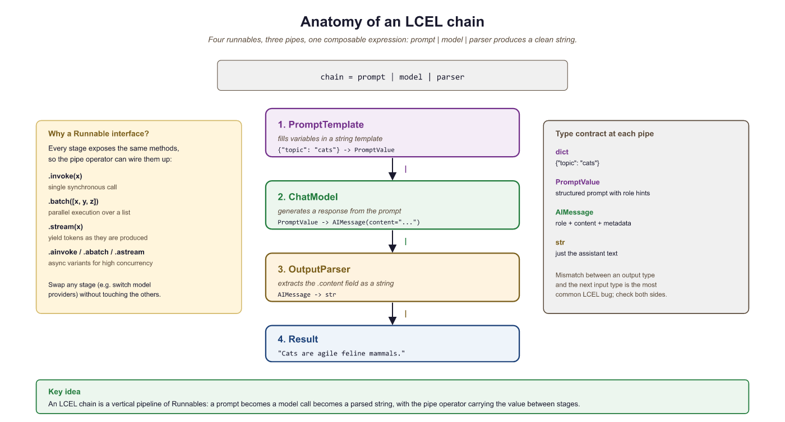

Part III's library layer has four jobs. First, talk to closed-API providers directly (the three first-party SDKs: openai, anthropic, google-genai). Second, talk to many providers uniformly when you need a router (LiteLLM, OpenRouter). Third, run open-weight models locally when API cost or latency forces the decision (Ollama, vLLM, llama.cpp). Fourth, observe and debug what your prompts do (PromptLayer, LangSmith). This section catalogues all four.
What changes from earlier parts is the centrality of the observability layer. A bug in a transformers training run shows up as a wrong number. A bug in an API-calling agent shows up as a flaky behaviour that costs money each time you reproduce it. The libraries below treat that as a first-class concern.
14.2.1 First-party SDKs
- openai: the canonical SDK. Streaming, structured outputs, tools, vision, audio, batch. Every other library imitates its surface.
- anthropic: Claude SDK. Tool use, prompt caching, computer use, extended thinking. The right SDK when you care about agentic tasks or 200K+ context.
- google-genai: Gemini SDK. Native multimodal (audio, video, PDF, images) and 1M-2M context tokens.
- mistralai: Mistral SDK; small surface, OpenAI-compatible mode also available.
- cohere: Cohere SDK. Rerank API is the standout feature you cannot get elsewhere.
14.2.2 Router and aggregator libraries
- LiteLLM: unified OpenAI-style interface across 100+ providers. A drop-in replacement for the openai SDK that lets you change
model="claude-opus-4-5"without rewriting the rest of the code. - OpenRouter: a service (not a library) that exposes all major providers behind an OpenAI-compatible API key. Use it for "I need a single API key for everything" and for cheap access to long-tail open models.
- instructor: structured-output wrapper for openai / anthropic / google-genai. Validates LLM outputs against Pydantic schemas with automatic retries.
- pydantic-ai (Pydantic, 2024): the newer structured-output / agent framework from the Pydantic team; has surpassed instructor in adoption for new projects through 2025.
- BAML (Boundary, 2024): typed prompt-DSL with TypeScript / Python codegen; strong 2025 traction for teams who want compile-time guarantees on prompt outputs.
- DSPy (Stanford NLP, 2023-25): prompt-program optimization framework. Treats prompts as a program to be compiled, not strings to hand-tune. The 2024-25 trend in serious prompt engineering.
- mirascope and marvin: alternative structured-output libraries when instructor or pydantic-ai do not fit.
14.2.3 Local-runtime libraries
- Ollama: the easiest way to run open-weight models locally. CPU and GPU support, OpenAI-compatible API. As of 2026 it switched to MLX on Apple Silicon.
- vLLM: high-throughput serving engine with PagedAttention. The right pick when you need server-grade throughput. The 2025-Q1 v1 architecture rewrite turns on prefix caching by default and exposes a first-class speculative-decoding API; if your vLLM mental model is from 2023, re-read the v1 docs.
- SGLang (sgl-project, 2024): the third real runtime alongside vLLM and TGI. RadixAttention prefix cache often beats vLLM on structured-output and constrained-decoding workloads.
- llama.cpp: C++ inference engine with GGUF format. Runs anywhere (CPU, GPU, Apple Silicon, Android). The substrate Ollama is built on.
- Text Generation Inference (TGI): Hugging Face's serving engine. Its share collapsed in 2024-25 in favor of vLLM and SGLang; primarily lives on as the backend of HF Inference Endpoints in 2026. Consider vLLM or SGLang first for new deployments.
- LMCache (2024): a KV-cache offloading layer that production deployments increasingly add on top of vLLM / SGLang to push prefix-cache hit rates further.
14.2.3.5 Inference-time techniques every modern serving stack uses
Three production-default inference techniques are now standard in vLLM v1 and SGLang, and they belong in your library mental model:
- Speculative decoding: a small draft model proposes the next N tokens, the large model verifies them in a single forward pass. 2-4x speedup with no quality loss. Standard in vLLM v1 and TGI.
- Prefix caching: KV state for shared prompt prefixes is cached across requests. Massive cost reduction for chat with stable system prompts. Anthropic exposes it as explicit
cache_controlblocks (90% discount on hits), OpenAI auto-detects above ~1024 tokens, Gemini exposes a explicit Cache resource. Same idea, three different surface areas. - Best-of-N sampling, self-consistency, and inference-time scaling: sample multiple completions, vote or rerank. The basis of o1 / o3 / R1-style reasoning at deploy time, not training time.
For the agent / MCP context that consumes these inference primitives, see Section 30.1. MCP (Model Context Protocol) is rapidly becoming the standard adapter for tool registries and SDK extensions, not just agent libraries.
14.2.4 Observability libraries
- PromptLayer: prompt versioning and trace logging. Sits as a wrapper around the openai SDK.
- LangSmith: LangChain's observability product. Full trace inspection for any LangChain or LangGraph pipeline.
- Langfuse: open-source alternative to LangSmith. Self-hostable.
- Helicone: API gateway and observability. Drop-in proxy for OpenAI calls.
14.2.5 Comparing the SDK layer
| Library | Layer | Best for | When to skip |
|---|---|---|---|
| openai | First-party SDK | OpenAI-only stack | Multi-provider production |
| anthropic | First-party SDK | Claude-specific features (caching, computer use) | OpenAI-only stack |
| google-genai | First-party SDK | Gemini multimodal, 1M-2M context | Text-only short-context work |
| LiteLLM | Router | Multi-provider, easy A/B testing | Single-provider perfectionism |
| OpenRouter | Hosted aggregator | One key for everything, cheap models | Strict-compliance environments |
The first-party SDKs always expose provider-specific features first (Anthropic's prompt caching landed in the anthropic SDK months before LiteLLM caught up; Gemini's video upload still has no LiteLLM equivalent). The router libraries earn their keep when you need to switch providers or call several in parallel for A/B testing. Most production code ends up using both: an Anthropic-specific path for caching, an OpenAI-specific path for batch, and LiteLLM as the boring default for everything else.
from openai import OpenAI
from anthropic import Anthropic
import google.genai as genai
# OpenAI (substitute the currently-available frontier model)
oa = OpenAI()
r = oa.chat.completions.create(model="gpt-5", messages=[{"role":"user","content":"Hi"}])
# Anthropic
an = Anthropic()
r = an.messages.create(model="claude-opus-4-5", max_tokens=128,
messages=[{"role":"user","content":"Hi"}])
# Google
g = genai.Client()
r = g.models.generate_content(model="gemini-2.5-pro", contents="Hi")
# Streaming variant (OpenAI) , every modern SDK ships one
with oa.chat.completions.stream(model="gpt-5", messages=[{"role":"user","content":"Hi"}]) as s:
for event in s:
if event.type == "content.delta":
print(event.delta, end="", flush=True)The three surface areas converged enough by 2026 that switching is mechanical; what differs is the optional parameters (caching, thinking budgets, structured outputs) where each SDK still exposes the provider's distinctive features.
14.2.6 Versions to pin
Install with uv (10-100x faster than pip and the modern default). The first-party SDKs ship frequently and break on minor versions. The safe pin set as of mid-2026: openai>=1.50, anthropic>=0.50, google-genai>=1.0, litellm>=1.50. For local runtimes: vllm>=1.0 (the v1 architecture; substitute vllm>=0.6 for legacy notebooks) and ollama server >=0.5.
LiteLLM's translation layer occasionally normalizes provider errors (rate limits, content-policy refusals, tool-call schema mismatches) into a generic BadRequestError that loses the underlying cause. When debugging a flaky pipeline, drop down to the first-party SDK for the failing call to see the raw provider error. The router is great for steady-state production, not great for diagnosing a 1% failure rate.
LangChain Core: Models, Prompts, and Chains
LangChain provides a unified interface for working with large language models from any provider. Its core abstractions (models, prompts, and chains) let you write provider-agnostic code, compose complex workflows from simple building blocks, and switch between OpenAI, Anthropic, Google, and open-source models with minimal changes. This section covers the foundational primitives you will use in every LangChain application. For LLM and agent engineers, this abstraction is what turns a prompt-engineering experiment into a portable production component; the same chain composes a RAG pipeline today and a tool-use agent tomorrow without rewriting the model-invocation layer.
1. Chat Models
At the heart of LangChain is the chat model abstraction. Rather than calling each provider's SDK directly, you instantiate a chat model class that normalizes the interface. All chat models accept a list of messages and return an AIMessage. This means you can swap providers without rewriting your application logic.
The following example shows how to instantiate chat models for OpenAI and Anthropic, then invoke them with identical message lists.
from langchain_openai import ChatOpenAI
from langchain_anthropic import ChatAnthropic
from langchain_core.messages import HumanMessage, SystemMessage
# Instantiate models from different providers
openai_model = ChatOpenAI(model="gpt-4o", temperature=0.7)
anthropic_model = ChatAnthropic(model="claude-sonnet-4-20250514", temperature=0.7)
# Both accept the same message format
messages = [
SystemMessage(content="You are a helpful coding assistant."),
HumanMessage(content="Explain Python list comprehensions in two sentences.")
]
# invoke() returns an AIMessage
response = openai_model.invoke(messages)
print(response.content)
# Swap to Anthropic with no other code changes
response = anthropic_model.invoke(messages)
print(response.content)
The invoke() method is synchronous and returns a single response. LangChain also provides stream() for token-by-token output, batch() for processing multiple inputs in parallel, and their async counterparts ainvoke(), astream(), and abatch().
This example demonstrates streaming and batch processing.
from langchain_openai import ChatOpenAI
from langchain_core.messages import HumanMessage
model = ChatOpenAI(model="gpt-4o-mini", temperature=0)
# Streaming: tokens arrive incrementally
for chunk in model.stream([HumanMessage(content="Write a haiku about Python.")]):
print(chunk.content, end="", flush=True)
print()
# Batch: process multiple inputs concurrently
questions = [
[HumanMessage(content="What is a decorator?")],
[HumanMessage(content="What is a generator?")],
[HumanMessage(content="What is a context manager?")],
]
responses = model.batch(questions, config={"max_concurrency": 3})
for resp in responses:
print(resp.content[:80], "...")Use batch() with max_concurrency to respect provider rate limits while still processing inputs faster than sequential invoke() calls. For real-time user-facing applications, prefer stream() so users see output as it is generated.
2. Prompt Templates
See Chapter 12.1 (Foundational Prompt Design) for prompt-template motivation and variable-injection fundamentals. LangChain provides two main template types: PromptTemplate for plain string prompts and ChatPromptTemplate for multi-message chat prompts.
The following example builds a chat prompt template with a system message and a user message that includes a variable placeholder.
from langchain_core.prompts import ChatPromptTemplate, PromptTemplate
# Simple string template (useful for completion-style models)
string_template = PromptTemplate.from_template(
"Translate the following text to {language}: {text}"
)
print(string_template.format(language="French", text="Hello, world!"))
# Chat prompt template (recommended for chat models)
chat_template = ChatPromptTemplate.from_messages([
("system", "You are a {role} who explains concepts at a {level} level."),
("human", "{question}")
])
# format_messages returns a list of Message objects
messages = chat_template.format_messages(
role="computer science professor",
level="beginner",
question="What is recursion?"
)
for msg in messages:
print(f"{msg.__class__.__name__}: {msg.content}")
Templates support partial application via partial(), letting you fill some variables now and the rest later. This is useful when certain values (like the current date or a system configuration) are known at initialization time but others arrive at runtime.
3. Chains: The Legacy LLMChain
Early versions of LangChain used the LLMChain class to connect a prompt template to a model. While this still works, it has been superseded by the LangChain Expression Language (LCEL). Understanding LLMChain is helpful for reading older code and tutorials.
This example shows the legacy chain approach for comparison with the modern LCEL approach that follows.
from langchain.chains import LLMChain
from langchain_openai import ChatOpenAI
from langchain_core.prompts import ChatPromptTemplate
# Legacy approach (still functional, but not recommended for new code)
prompt = ChatPromptTemplate.from_messages([
("system", "You are a helpful assistant."),
("human", "Explain {topic} in {num_sentences} sentences.")
])
model = ChatOpenAI(model="gpt-4o-mini")
chain = LLMChain(llm=model, prompt=prompt)
result = chain.invoke({"topic": "gradient descent", "num_sentences": "3"})
print(result["text"])LLMChain and other legacy chain classes are deprecated as of LangChain 0.2. New projects should use LCEL (covered next). The legacy classes remain available for backward compatibility but will not receive new features.
4. LangChain Expression Language (LCEL)
LCEL is LangChain's modern composition framework. It uses the pipe operator (|) to chain components together, similar to Unix pipes. Every LCEL component implements the Runnable interface, which means it automatically supports invoke(), stream(), batch(), and their async variants. This composability is the key design principle: you build complex workflows by snapping simple pieces together.
The simplest LCEL chain connects a prompt template to a model and (optionally) an output parser.
from langchain_openai import ChatOpenAI
from langchain_core.prompts import ChatPromptTemplate
from langchain_core.output_parsers import StrOutputParser
# Define components
prompt = ChatPromptTemplate.from_messages([
("system", "You are a concise technical writer."),
("human", "Explain {concept} in exactly {sentences} sentences.")
])
model = ChatOpenAI(model="gpt-4o-mini", temperature=0)
parser = StrOutputParser()
# Compose with the pipe operator
chain = prompt | model | parser
# invoke() flows data through: prompt -> model -> parser
result = chain.invoke({"concept": "MapReduce", "sentences": "3"})
print(result) # A plain string (parser extracts .content from AIMessage)
# Streaming works automatically through the entire chain
for token in chain.stream({"concept": "Docker containers", "sentences": "2"}):
print(token, end="", flush=True)
5. RunnablePassthrough and RunnableParallel
Real-world chains often need to pass original input alongside computed values, or run multiple steps in parallel. LangChain provides two utility classes for these patterns: RunnablePassthrough passes its input through unchanged, and RunnableParallel runs multiple runnables simultaneously, collecting their outputs into a dictionary.
This example uses RunnableParallel to run two independent LLM calls concurrently, then merges the results.
from langchain_openai import ChatOpenAI
from langchain_core.prompts import ChatPromptTemplate
from langchain_core.output_parsers import StrOutputParser
from langchain_core.runnables import RunnableParallel, RunnablePassthrough
model = ChatOpenAI(model="gpt-4o-mini", temperature=0)
parser = StrOutputParser()
# Two independent chains
pros_chain = (
ChatPromptTemplate.from_template("List 3 pros of {technology}.")
| model | parser
)
cons_chain = (
ChatPromptTemplate.from_template("List 3 cons of {technology}.")
| model | parser
)
# RunnableParallel runs both chains concurrently
parallel = RunnableParallel(pros=pros_chain, cons=cons_chain)
result = parallel.invoke({"technology": "microservices"})
print("PROS:", result["pros"])
print("CONS:", result["cons"])RunnablePassthrough is especially useful in retrieval-augmented generation (RAG) pipelines where you need to forward the user's original question alongside retrieved context.
from langchain_core.runnables import RunnablePassthrough, RunnableParallel
# Toy in-memory keyword "retriever". Replace with a real retriever
# (FAISS, Chroma, pgvector, Pinecone, ...) in production; the point of
# this example is the RunnableParallel pattern, not a useful retriever.
FACTS = {
"python": "Python was created by Guido van Rossum in 1991.",
"django": "Django is a Python web framework released in 2005.",
"pytorch": "PyTorch is a deep-learning library released by Meta in 2016.",
"transformer": "The Transformer architecture was introduced by Vaswani et al. in 2017.",
}
def keyword_retriever(query: str) -> str:
"""Naive keyword match: return the first fact whose key appears in the query."""
q = query.lower()
for key, fact in FACTS.items():
if key in q:
return fact
return "No relevant context in knowledge base."
# RunnableParallel runs retrieval and pass-through in parallel: the user
# question flows to BOTH the prompt template (as `question`) and the
# retriever (as `context`), so we never re-fetch and never lose the query.
setup = RunnableParallel(
context=keyword_retriever,
question=RunnablePassthrough(),
)
rag_prompt = ChatPromptTemplate.from_template(
"Context: {context}\n\nAnswer this question: {question}"
)
rag_chain = setup | rag_prompt | model | parser
# Three queries hit three different facts; one falls through.
for q in ["Who created Python?", "When was PyTorch released?",
"What is the Transformer architecture?", "How fast is Rust?"]:
print(f"Q: {q}\nA: {rag_chain.invoke(q)}\n")RunnableParallel + RunnablePassthrough pattern for retrieval-augmented generation. The retriever is a toy keyword-match dict so the example is self-contained, but the chain shape (parallel-retrieve, prompt, model, parse) is exactly the shape a production RAG chain takes with a real vector retriever swapped in for keyword_retriever.You can inspect any LCEL chain's structure by calling chain.get_graph().print_ascii(). This renders an ASCII diagram showing how components are connected, which is invaluable for debugging complex chains.
6. Configuring Model Parameters at Runtime
LCEL chains accept a config dictionary at invocation time for runtime customization. You can also use .configurable_fields() to expose model parameters (such as temperature or model name) as runtime-configurable options without rebuilding the chain.
This example shows how to make the model name configurable so that callers can switch between models per request.
from langchain_openai import ChatOpenAI
from langchain_core.prompts import ChatPromptTemplate
from langchain_core.output_parsers import StrOutputParser
from langchain_core.runnables import ConfigurableField
model = ChatOpenAI(model="gpt-4o-mini", temperature=0).configurable_fields(
model_name=ConfigurableField(
id="model_name",
name="Model Name",
description="The OpenAI model to use"
)
)
chain = (
ChatPromptTemplate.from_template("Summarize: {text}")
| model
| StrOutputParser()
)
# Use default model
result1 = chain.invoke({"text": "LangChain is a framework for LLM apps."})
# Override model at runtime
result2 = chain.with_config(
configurable={"model_name": "gpt-4o"}
).invoke({"text": "LangChain is a framework for LLM apps."})LCEL replaces the legacy chain classes with a composable, pipe-based syntax. Every component in an LCEL chain automatically supports invoke, stream, batch, and async variants. Use RunnableParallel for concurrent execution and RunnablePassthrough to forward data alongside computed values.
LangChain Output Parsers and Structured Output
LLMs generate free-form text by default, but applications need structured data: JSON objects, typed fields, lists, enums. LangChain provides several mechanisms for extracting structured output from model responses, ranging from prompt-based parsers to native model features like tool calling. The modern recommended approach uses with_structured_output(), which leverages the model's built-in structured generation capabilities. This section covers both the legacy parsers and the modern approach.
1. Why Structured Output Matters
See Chapter 11.2 (Structured Output) for the motivation and provider-native support discussion. The LangChain API is below.
2. The Modern Approach: with_structured_output
The simplest and most reliable way to get structured output from a chat model is with_structured_output(). This method is available on all chat models that support tool calling (OpenAI, Anthropic, Google, Mistral, and others). You pass a Pydantic model or JSON schema, and the method returns a new runnable that outputs validated objects instead of raw text.
This example defines a Pydantic model for ticket classification and uses with_structured_output() to ensure the model's response conforms to the schema.
from pydantic import BaseModel, Field
from typing import Literal
from langchain_openai import ChatOpenAI
class TicketClassification(BaseModel):
"""Classification of a customer support ticket."""
category: Literal["billing", "technical", "general", "account"] = Field(
description="The primary category of the ticket"
)
priority: Literal["low", "medium", "high", "critical"] = Field(
description="The urgency level"
)
summary: str = Field(
description="A one-sentence summary of the issue"
)
requires_human: bool = Field(
description="Whether the ticket needs human escalation"
)
model = ChatOpenAI(model="gpt-4o", temperature=0)
structured_model = model.with_structured_output(TicketClassification)
ticket_text = """
I've been charged twice for my subscription this month.
The first charge was on the 1st and the second on the 15th.
I need a refund for the duplicate charge immediately.
"""
result = structured_model.invoke(
f"Classify this support ticket:\n\n{ticket_text}"
)
# result is a TicketClassification instance, not a string
print(f"Category: {result.category}") # "billing"
print(f"Priority: {result.priority}") # "high"
print(f"Summary: {result.summary}")
print(f"Needs human: {result.requires_human}") # True
print(f"Type: {type(result)}") # <class 'TicketClassification'>Always add description fields to your Pydantic model attributes. These descriptions are sent to the model as part of the schema and significantly improve the quality of structured output. Think of them as instructions for each field.
Nested and Complex Schemas
Pydantic models can be nested to represent complex structures. The model will populate all levels of the hierarchy.
from pydantic import BaseModel, Field
from typing import List, Optional
class Entity(BaseModel):
"""A named entity extracted from text."""
name: str = Field(description="The entity name")
entity_type: str = Field(description="Type: person, organization, location, date")
context: str = Field(description="The sentence where this entity appears")
class DocumentAnalysis(BaseModel):
"""Complete analysis of a document."""
title: str = Field(description="A suitable title for the document")
language: str = Field(description="The primary language of the text")
entities: List[Entity] = Field(description="All named entities found")
key_topics: List[str] = Field(description="3 to 5 main topics")
sentiment: Literal["positive", "negative", "neutral", "mixed"] = Field(
description="Overall sentiment"
)
word_count_estimate: int = Field(description="Approximate word count")
structured_model = model.with_structured_output(DocumentAnalysis)
analysis = structured_model.invoke("Analyze this text: " + some_text)
# Access nested objects
for entity in analysis.entities:
print(f" {entity.name} ({entity.entity_type})")3. Legacy Output Parsers
Before with_structured_output() existed, LangChain used output parsers that instructed the model (via prompt engineering) to format its response as JSON, then parsed that JSON into Python objects. These parsers are still available and useful for models that do not support tool calling.
PydanticOutputParser
The PydanticOutputParser generates format instructions that are injected into the prompt, then validates the model's response against the schema.
from langchain_core.output_parsers import PydanticOutputParser
from langchain_core.prompts import ChatPromptTemplate
from pydantic import BaseModel, Field
from typing import List
class Recipe(BaseModel):
name: str = Field(description="Name of the recipe")
ingredients: List[str] = Field(description="List of ingredients")
prep_time_minutes: int = Field(description="Preparation time in minutes")
difficulty: str = Field(description="easy, medium, or hard")
parser = PydanticOutputParser(pydantic_object=Recipe)
prompt = ChatPromptTemplate.from_messages([
("system", "You are a helpful cooking assistant.\n{format_instructions}"),
("human", "Give me a recipe for {dish}.")
])
# The parser generates instructions like:
# "The output should be formatted as a JSON instance..."
chain = prompt.partial(
format_instructions=parser.get_format_instructions()
) | model | parser
recipe = chain.invoke({"dish": "pasta carbonara"})
print(f"{recipe.name}: {recipe.prep_time_minutes} min, {recipe.difficulty}")
print(f"Ingredients: {', '.join(recipe.ingredients)}")JsonOutputParser
When you do not need Pydantic validation and just want a Python dictionary, JsonOutputParser extracts JSON from the model's response.
from langchain_core.output_parsers import JsonOutputParser
json_parser = JsonOutputParser()
chain = (
ChatPromptTemplate.from_template(
"Return a JSON object with keys 'city', 'country', and 'population' "
"for: {query}\n{format_instructions}"
).partial(format_instructions=json_parser.get_format_instructions())
| model
| json_parser
)
result = chain.invoke({"query": "Tokyo"})
print(result) # {'city': 'Tokyo', 'country': 'Japan', 'population': 13960000}
print(type(result)) # <class 'dict'>Prefer with_structured_output() for any model that supports tool calling (GPT-4o, Claude, Gemini). It is more reliable because it uses the model's native structured generation rather than hoping the model follows format instructions in the prompt. Use legacy parsers only for models that lack tool-calling support or when you need the format instructions to be visible in the prompt for debugging.
4. Output Fixing
Sometimes the model's output almost matches the expected format but has minor issues (a missing closing brace, an extra comma, a field with the wrong type). The OutputFixingParser wraps another parser and, when parsing fails, sends the malformed output back to the LLM with the error message, asking it to fix the formatting.
from langchain.output_parsers import OutputFixingParser
# Wrap the Pydantic parser with auto-fixing
fixing_parser = OutputFixingParser.from_llm(
parser=parser, # The PydanticOutputParser from above
llm=model
)
# Even if the model returns slightly malformed JSON, the fixer will retry
malformed = '{"name": "Carbonara", "ingredients": ["pasta", "eggs"], "prep_time_minutes": "thirty", "difficulty": "medium"}'
# "thirty" is a string but the schema expects int
# The fixing parser will ask the LLM to correct it
fixed = fixing_parser.parse(malformed)
print(f"Prep time: {fixed.prep_time_minutes}") # 30 (corrected to int)5. Retry Parser
The RetryOutputParser goes further than the fixing parser: when parsing fails, it sends both the original prompt and the malformed output back to the model, giving it the full context to produce a correct response. This is useful when the model's output is fundamentally wrong rather than just syntactically broken.
from langchain.output_parsers import RetryOutputParser
retry_parser = RetryOutputParser.from_llm(
parser=parser,
llm=model,
max_retries=2 # Try up to 2 times before raising an error
)
# The retry parser needs access to the original prompt
# so it can re-ask the model with context
from langchain_core.prompt_values import StringPromptValue
prompt_value = StringPromptValue(text="Give me a recipe for pasta carbonara.")
completion = "Here is a great carbonara recipe..." # No JSON at all
try:
result = retry_parser.parse_with_prompt(completion, prompt_value)
print(result)
except Exception as e:
print(f"Failed after retries: {e}")6. Streaming Structured Output
When using with_structured_output(), you can stream partial results as the model generates them. This is valuable for user-facing applications where you want to show structured data progressively. LangChain yields partial Pydantic objects (or dictionaries) as each field becomes available.
from langchain_openai import ChatOpenAI
from pydantic import BaseModel, Field
from typing import List
class MovieReview(BaseModel):
title: str = Field(description="Movie title")
year: int = Field(description="Release year")
rating: float = Field(description="Rating from 0 to 10")
pros: List[str] = Field(description="What worked well")
cons: List[str] = Field(description="What could be improved")
verdict: str = Field(description="One sentence verdict")
model = ChatOpenAI(model="gpt-4o", temperature=0)
structured_model = model.with_structured_output(MovieReview)
# Stream partial objects
for partial in structured_model.stream("Review the movie Inception (2010)"):
print(partial)
# Early chunks: MovieReview(title='Inception', year=None, ...)
# Later chunks fill in more fields progressivelyUse with_structured_output() with Pydantic models as your default approach for structured generation. Add field descriptions to guide the model. For resilience, consider wrapping legacy parsers with OutputFixingParser. Reserve RetryOutputParser for cases where you need full-context retries.
What's Next?
In the next section, Section 14.3: Datasets & Benchmarks, we build on the material covered here.